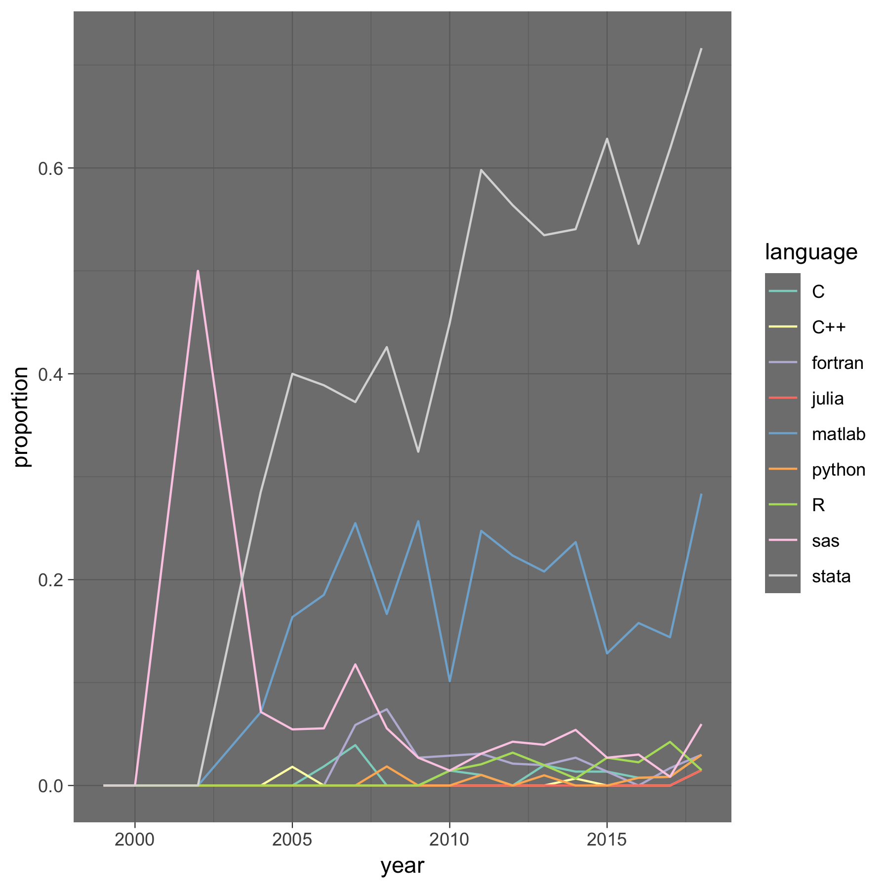

econ-program-usage-data
Patrick Baylis
October 10, 2018

Citation
Cite as
Patrick Baylis, & Paul Schrimpf. (2018).
pbaylis/econ-program-usage-data:
First release of data (AER only) (Version v1.0.1).
Zenodo. https://zenodo.org/record/1456185Description
Software usage in AEA supplements, based on file extension.
This release only has data on the AER.
Data description
See codebook_articles_programs_used.pdf for data description.
Sample graph
(no code) 